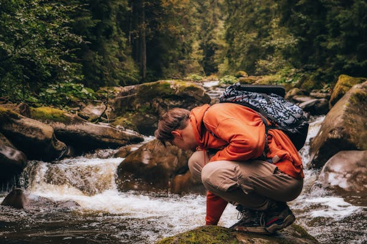

Traveling is not just a hobby for me; it's a way of life, a journey of discovery and self-discovery that has shaped me in profound and unexpected ways. From the sun-drenched beaches of the Caribbean to the snow-capped peaks of the Himalayas, I've been fortunate enough to explore some of the most breathtaking corners of our planet, each journey leaving an indelible mark on my soul and expanding my understanding of the world and my place in it. One of the things I love most about traveling is the opportunity it affords me to immerse myself in different cultures and ways of life, to step outside of my comfort zone and see the world through new eyes. Whether I'm sampling street food in Bangkok, bargaining for trinkets in a bustling market in Marrakech, or participating in a traditional tea ceremony in Kyoto, I relish the chance to connect with people from different backgrounds and learn from their unique perspectives and experiences.  But traveling isn't just about ticking off bucket-list destinations or snapping envy-inducing photos for social media. It's about embracing the unknown, embracing uncertainty, and embracing the opportunity to grow and evolve as a person. It's about confronting my own prejudices and preconceptions, challenging my assumptions, and opening myself up to new ideas and ways of being. And it's about forging connections—with people, with places, and with myself—that transcend borders and boundaries and remind me of our shared humanity. Of course, traveling isn't always glamorous or easy. There have been missed flights, lost luggage, and moments of homesickness along the way. But even in the midst of the inevitable challenges and setbacks, I've found that there's always something to be gained from the experience—whether it's a newfound sense of resilience, a deeper appreciation for the simple pleasures of home, or a humbling reminder of the fragility and beauty of life itself. Ultimately, for me, traveling is not just about seeing new places; it's about embracing the journey—both the outward journey of exploration and adventure, and the inward journey of self-discovery and growth. It's about living life with open arms and an open heart, embracing the diversity and richness of our world, and finding beauty and meaning in every step of the way.